Accéder à l'application
Pour accéder à Watchdoc Print Client for Android, cliquez sur l'icone
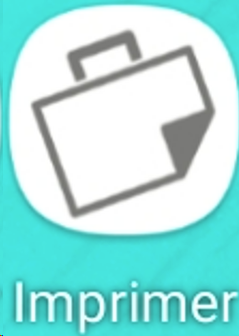
installée sur le mobile.S'authentifier
-
Pour utiliser l'application, authentifiez-vous dans l'interface Watchdoc à l'aide de votre compte.
Ce compte est celui qui est enregistré dans l'annuaire paramétré par défaut dans Watchdoc (annuaire Microsoft Windows, par exemple).
Dans le cas où l'identifiant est erroné, un message vous en informe.
-
Un message de bienvenue confirme votre authentification et vous informe de la nécessité de sélectionner l'emplacement d'où vous souhaitez lancer vos impressions :
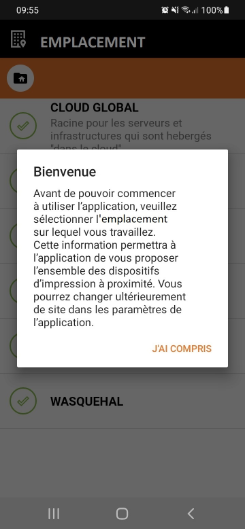
Sélectionner l'emplacement
Par défaut, WPC for Android propose un emplacement correspondant à l'adresse IP à partir de laquelle votre mobile se connecte au réseau.
Dans la liste Emplacement s'affichent les lieux dotés de périphériques d'impression en réseau d'où vous êtes susceptibles de lancer une impression.
-
vérifiez l'emplacement affiché dans la liste. Conservez-le si elle correspond au lieu depuis lequel vous souhaitez imprimer ;
-
si vous souhaitez en changer, parcourez la liste hiérarchique pour y sélectionner un nouvel emplacement, puis confirmez la sélection :
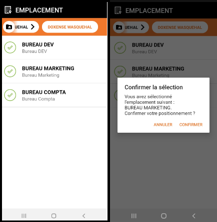
-
Une fois l'emplacement sélectionné, vous êtes invité à autoriser l'accès aux fichiers de votre mobile Android :
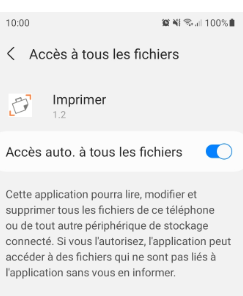
Lancer l'impression depuis l'application
Après avoir autorisé l'accès aux fichiers, vous accédez à l'interface d'impression :
-
cliquez sur le bouton Documents à imprimer
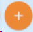
; -
parcourez le gestionnaire de fichiers de votre mobile et sélectionnez le (ou les) document(s) .pdf que vous souhaitez imprimer ;
-
les documents s'affichent dans la liste des travaux en attente : sélectionnez les documents à imprimer ;
-
dans la barre d'outils du bas, cliquez sur le bouton Imprimer
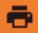
;
Lancer l'impression depuis le document .pdf
Vous pouvez également lancer l'impression depuis le document .pdf.
-
Dans votre mobile, retrouvez le fichier PDF que vous souhaitez imprimer ;
-
Sélectionnez le document à imprimer et ouvrez-le à l'aide de l'application Watchdoc Imprimer :
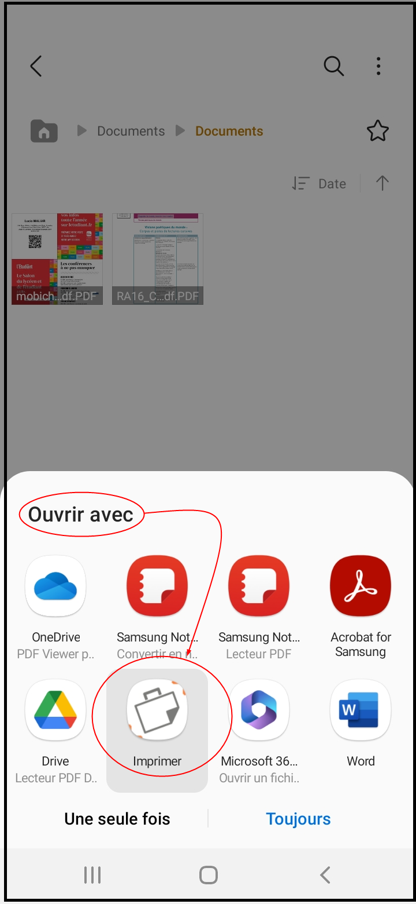
-
Cliquez ensuite sur Sélectionner une destination.
-
Dans la liste des destinations disponibles, sélectionnez l'imprimante sur laquelle vous souhaitez débloquer votre impression :
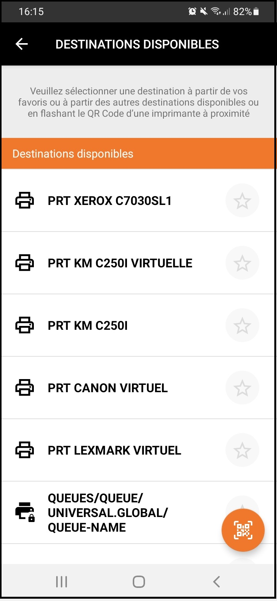
-
Si nécessaire, choisissez les options de finition de votre impression.
N.B. : les options de finition changent en fonction des capacités du périphérique d'impression sélectionné.
-
Cliquez sur Valider une fois les options définies :
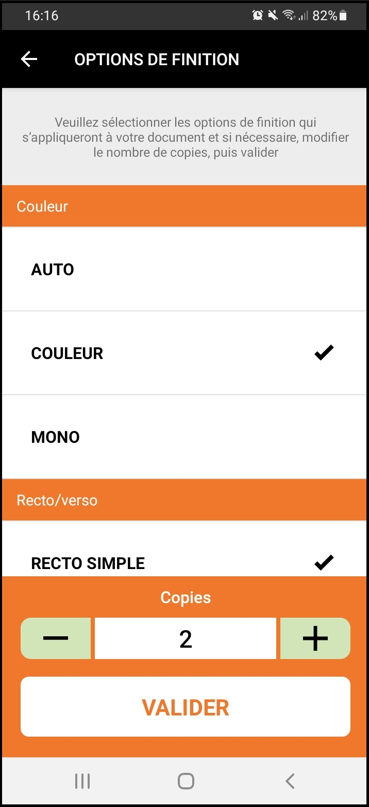
-
Cliquez ensuite sur Imprimer :
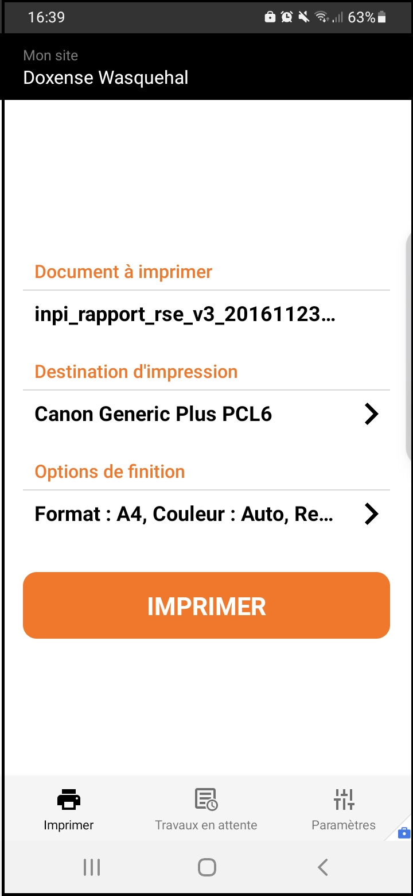
-
Vous pouvez également annuler l'impression tant que le bouton Annuler est actif :
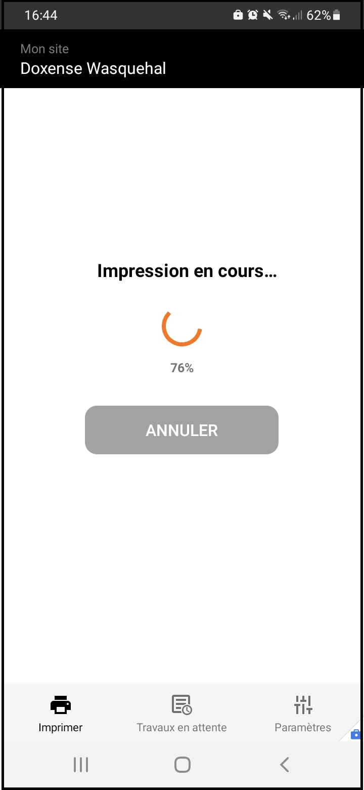
Lancer l'impression depuis la fonction "partager le document .pdf"
L'application vous permet de lancer l'impression depuis la fonction "Partager le document .pdf".
-
Dans votre mobile, retrouvez et affichez le fichier PDF que vous souhaitez imprimer.
-
Dans la liste des options, cliquez sur le bouton Partager (Share) :
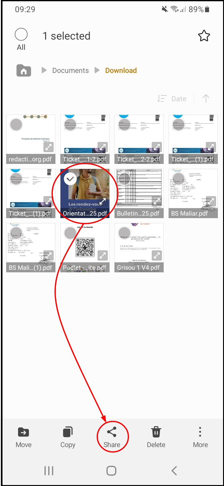
-
Si vous avez ouvert le document, activez les options, puis cliquez sur le bouton Partager (Share) et sélectionnez ensuite l'option PDF file :
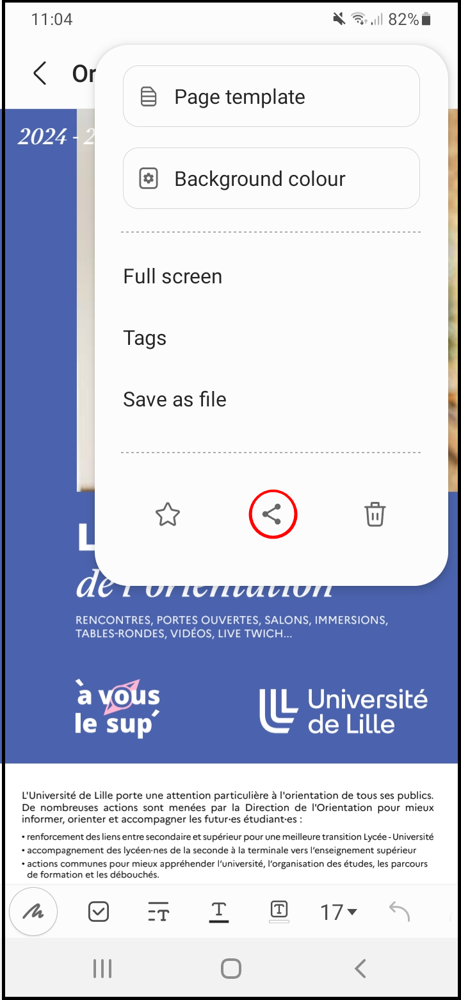
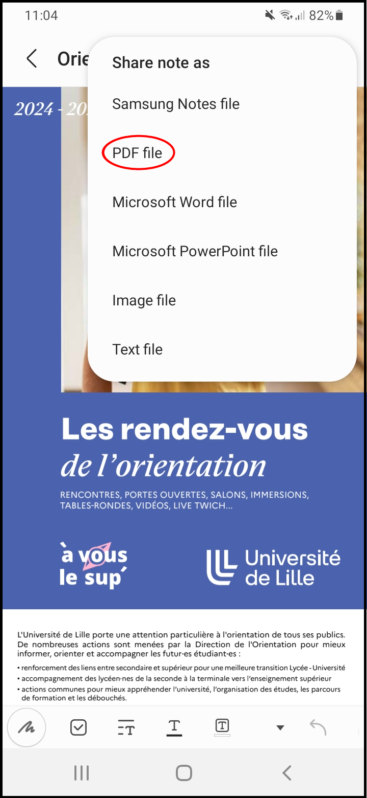
-
Une liste d'applications permettant le partage vous sont proposées.
Dans cette liste, sélectionnez l'application Watchdoc Imprimer :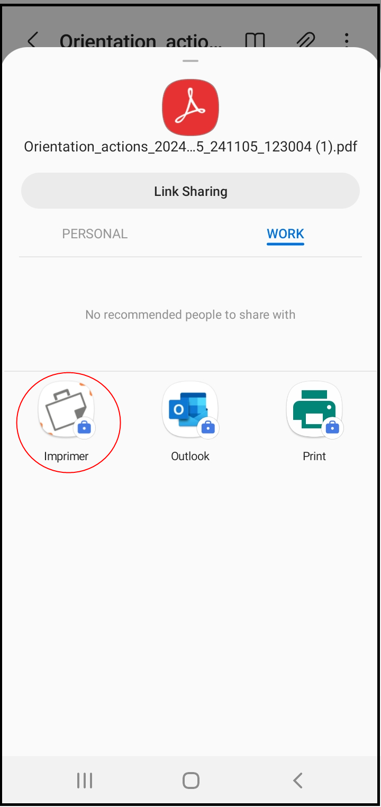
-
Dans l'interface Watchdoc, sélectionnez la destination d'impression.
-
Au besoin, précisez les options de finition.
-
Cliquez sur Imprimer :
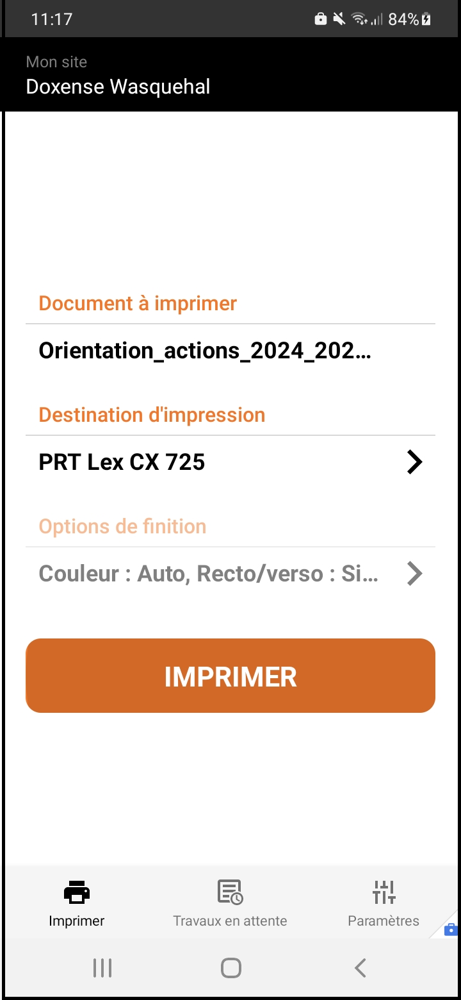
è Un message confirme la réussite de l'impression.
En cas d'échec, suivez les instructions affichées dans l'interface.
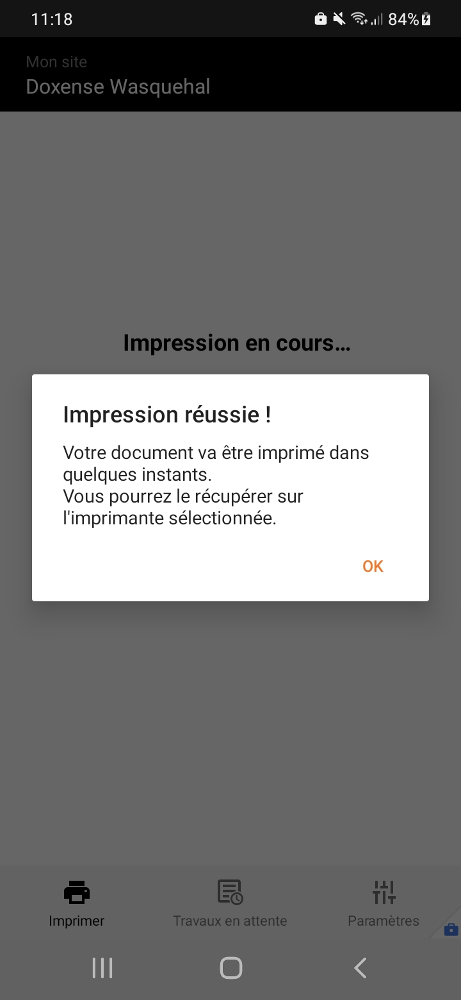
Débloquer l'impression
En fonction de la destination choisie et de la configuration des périphériques d'impression, vous pouvez débloquer vos impressions de plusieurs manières :
-
vous n'avez pas sélectionné de périphérique précis : WPC vous invite à vous rendre près d'un périphérique d'impression et de scanner le QR code qui y est apposé afin de débloquer l'impression ;
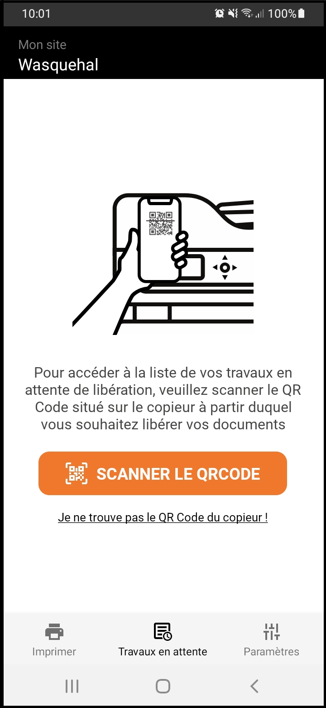
-
vous avez sélectionné 1 périphérique d'impression spécifique et ce périphérique est configuré en mode "validation" : WPC affiche le message "Soumission réussie !". Rendez-vous sur le périphérique d'impression choisi. Après authentification, vous accédez à la liste des travaux depuis laquelle vous pouvez débloquer vos impressions ;
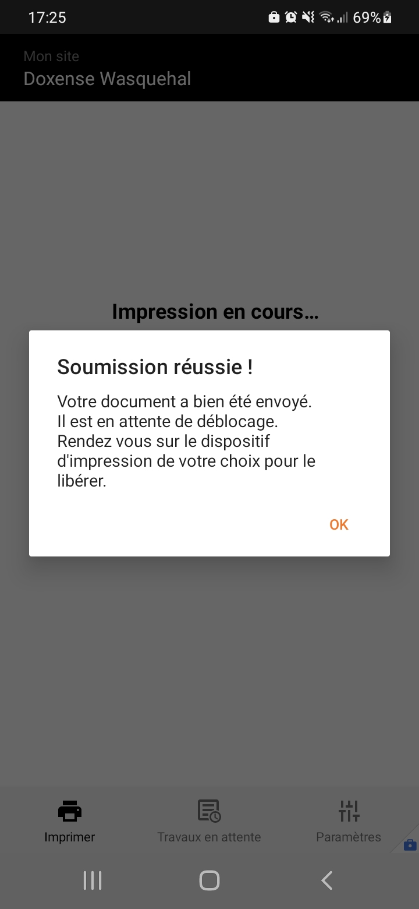
-
vous avez sélectionné 1 périphérique d'impression spécifique et ce périphérique est configuré en mode "comptabilisation" : WPC affiche le message "Impression réussie !". Rendez-vous sur le périphérique d'impression choisi pour y récupérer votre travail qui a été imprimé".
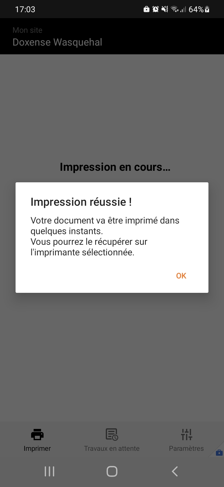
Désigner une destination favorite
-
dans la liste des destinations, cliquez sur l'icone pour désigner une destination favorite ;
-
une fois sélectionnée, la destination est classée dans la section Mes destinations favorites ;
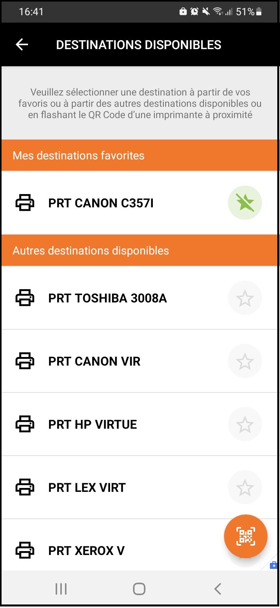
-
cliquez sur pour enlever une destination favorite de la liste.
Message d'erreur
Dans le cas où l'application n'arrive pas à contacter le serveur (connexion WI-FI désactivée ou indisponibilité du serveur), un message d'erreur s'affiche :
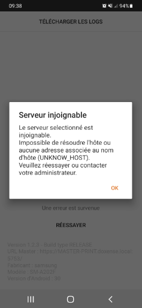
Télécharger les logs
Si un problème survient dans l'application, vous pouvez télécharger les logs afin de les envoyer au Support Doxense, à condition de disposer d'une application de messagerie ou d'un espace de stockage dédié.
-
Si le problème survient dans l'application avant l'authentification, cliquez sur le bandeau Télécharger les logs situé en haut de la page :
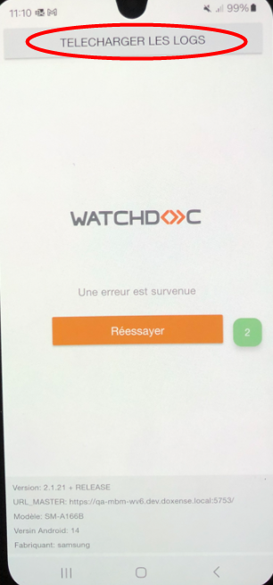
-
si le problème survient après l'authentification, appuyez sur l'icône Paramètres ;
-
appuyez ensuite sur Télécharger les logs :
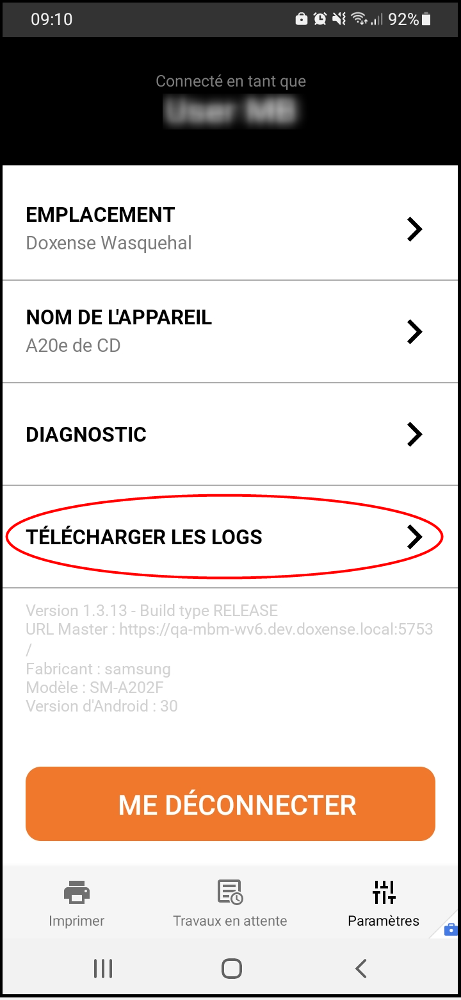
-
parmi les applications de messageries disponibles, sélectionnez celle avec laquelle vous souhaitez envoyer les logs :
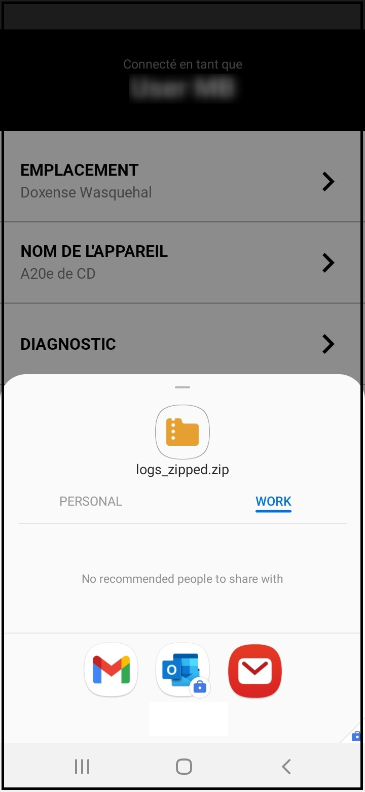
-
depuis la messagerie, saisissez l'adresse mail du service de Support ou du référent technique auquel vous souhaitez adresser les logs et validez l'envoi.
N.B. : vous pouvez aussi envoyer des fichiers de logs dans un espace de stockage partagé.
Se déconnecter
-
Cliquez sur le bouton Me déconnecter pour quitter l'application :
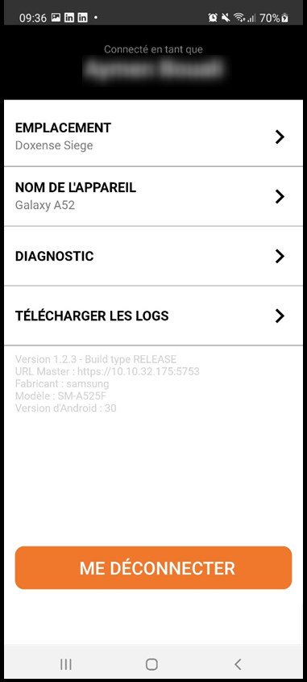